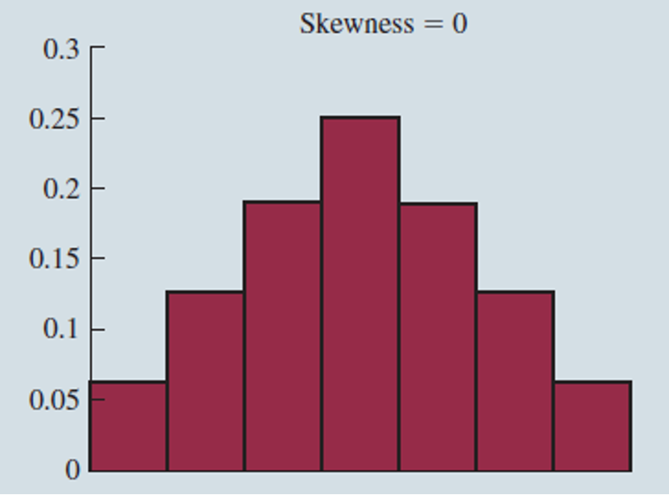
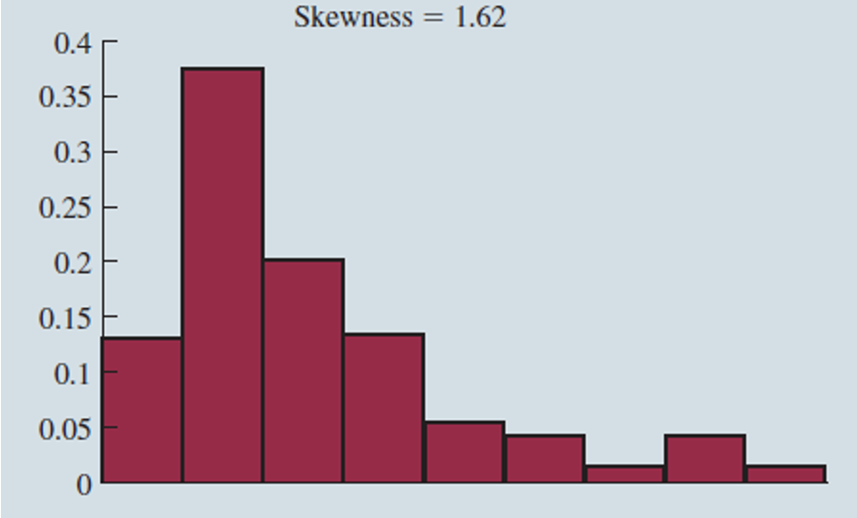
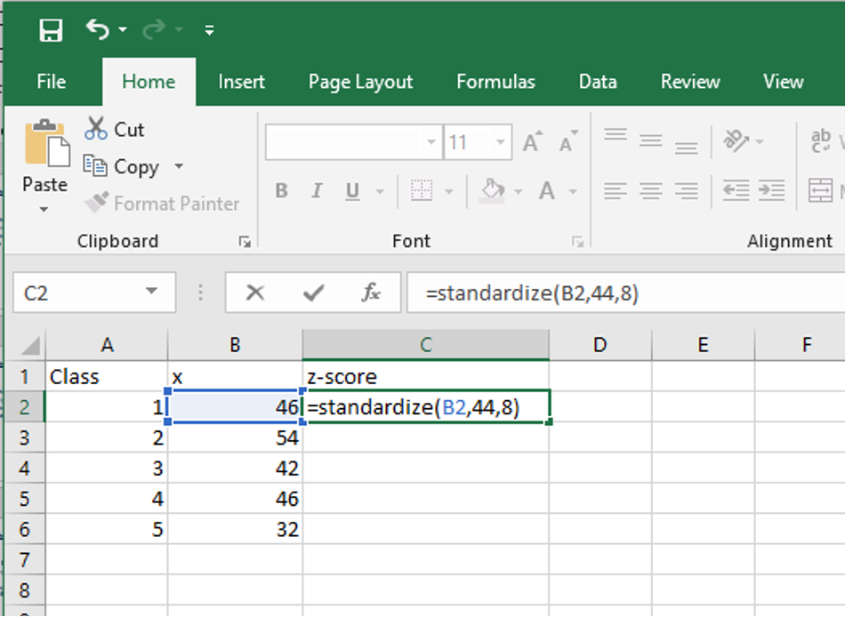
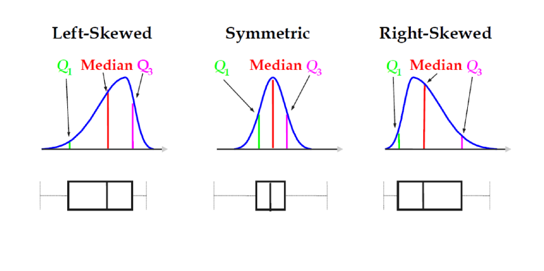
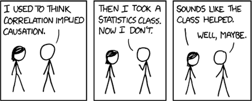
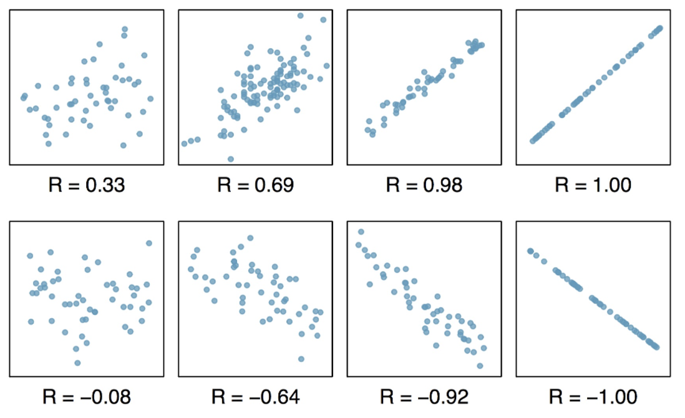
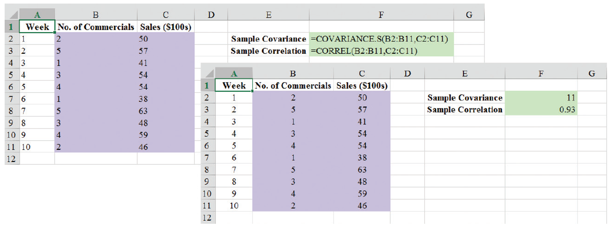

MGMT 30500: Business Statistics
Basic Stat. & Prob. Rvw. 02
Overview
Descriptive Statistics
Measures of Central Location and Variability
Distribution Shape
- Skewness
- Symmetry
Relative Location and z-Scores
- Calculation and Interpretation
- Examples
Empirical Rule
- 68-95-99.7 Rule
- Detecting Outliers
Five-Number Summaries and Boxplots
Measures of Association Between Two Variables
- Covariance
- Correlation
Descriptive Statistics
Measures of Central Location and Variability
Central Location
| Statistic | Definition | Formula |
|---|---|---|
| Mean | The average of all values of a variable | \(\bar{x} = \frac{\sum_{i=1}^{n} x_i}{n}\) |
| Mode | The most frequently occurring value | |
| kth Percentile | Roughly k% of the data is at or below this value | |
| Quartile | The first, second, and third quartiles are 25th, 50th, and 75th percentiles | \(Q1, Q2, Q3\) |
| Median | The “middle” observation when the data are listed from smallest to largest | \(Q2\) |
| Maximum | The largest value | |
| Minimum | The smallest value | |
| Midrange | The middle of the maximum and minimum | \(\frac{Max + Min}{2}\) |
| Midhinge | The middle of the first and third quartiles | \(\frac{Q3 + Q1}{2}\) |
Variability (Sampling Variation)
Sample Variance: “Average” squared deviation of observations from the mean of all observations (\(n-1\) is called the degrees of freedom, df):
\[ S^2 = \frac{\sum (x_i - \bar{x})^2}{n - 1} \]
- Why do we compute the sample variance using \(n-1\) instead of \(n\)?
- To not underestimate the True Population Variance \(\sigma^2\)
- What is an unbiased estimator? Video
- Video and Simulation
Sample Standard Deviation:
\[ S = \sqrt{S^2} \]
Range = Maximum – Minimum.
Interquartile Range (IQR) = 3rd Quartile – 1st Quartile
(Range of the middle 50% of data.)
Distribution Shape
Distribution Shape: Skewness
An important measure of the shape of a distribution is called skewness.
The formula for the skewness of sample data is:
\[ \text{Skewness} = \frac{n}{(n - 1)(n - 2)} \sum \left(\frac{x_i - \bar{x}}{s}\right)^3 \]
Skewness can be easily computed using statistical software.
Distribution Shape: Skewness
Symmetric (not skewed)
- Skewness is zero.
- Mean and median are equal.
Distribution Shape: Skewness

Moderately Skewed Left
- Skewness is negative.
- Mean will usually be less than the median.
Distribution Shape: Skewness

Moderately Skewed Right
- Skewness is positive.
- Mean will usually be more than the median.
Distribution Shape: Skewness

Highly Skewed Right
- Skewness is positive (often above 1.0).
- Mean will usually be more than the median.
Relative Location - z-Scores
z-Scores
The z-score is often called the standardized value.
It describes the relative location of a data value relative to the mean.
It denotes the number of standard deviations a data value \(x_i\) is from the mean.
\[ Z_i = \frac{x_i - \bar{x}}{s} \]
=STANDARDIZE(x, mean, standard deviation)
z-Scores
- An observation’s z-score is a measure of the relative location of the observation in a data set.
- A data value less than the sample mean will have a z-score less than zero.
- A data value greater than the sample mean will have a z-score greater than zero.
- A data value equal to the sample mean will have a z-score of zero.
z-Scores
Example: class_size_data.xlsx
\[ Z_i = \frac{x_i - \bar{x}}{s} \]
| Number of students in class | Deviation about the Mean | Z score |
|---|---|---|
| 46 | 2 | \(\frac{2}{8} = 0.25\) |
| 54 | 10 | \(\frac{10}{8} = 1.25\) |
| 42 | -2 | \(\frac{-2}{8} = -0.25\) |
| 46 | 2 | \(\frac{2}{8} = 0.25\) |
| 32 | -12 | \(\frac{-12}{8} = -1.5\) |
Note: \(\bar{x} = 44\) and \(s = 8\) for the given data.
z-Scores - Example

=STANDARDIZE(x, mean, standard deviation)
Empirical Rule - 68-95-99.7 Rule
Empirical Rule - 68-95-99.7 Rule

When the data are believed to approximate a bell-shaped (normal) distribution:
- The empirical rule can be used to determine the percentage of data values that must be within a specified number of standard deviations of the mean.
Empirical Rule - 68-95-99.7 Rule
For nearly normally distributed data,
- about 68% falls within 1 SD of the mean,
- about 95% falls within 2 SD of the mean,
- about 99.7% falls within 3 SD of the mean.
It is possible for observations to fall 4, 5, or more standard deviations away from the mean, but these occurrences are very rare if the data are nearly normal.
Empirical Rule - 68-95-99.7 Rule - Example
SAT scores are distributed nearly normally with mean 1500 and standard deviation 300.
- ~68% of students score between 1200 and 1800 on the SAT.
- ~95% of students score between 900 and 2100 on the SAT.
- ~$99.7% of students score between 600 and 2400 on the SAT.
Detecting Outliers
Detecting Outliers
An outlier is an unusually small or unusually large value in a data set.
A data value with a z-score less than −3 or greater than +3 might be considered an outlier.
It might be:
- an incorrectly recorded data value
- a data value that was incorrectly included in the data set
- a correctly recorded unusual data value that belongs in the data set
Detecting Outliers - Example
Example: class_size_data.xlsx
\[ Z_i = \frac{x_i - \bar{x}}{s} \]
| Number of students in class | Deviation about the Mean | Z score |
|---|---|---|
| 46 | 2 | \(\frac{2}{8} = 0.25\) |
| 54 | 10 | \(\frac{10}{8} = 1.25\) |
| 42 | -2 | \(\frac{-2}{8} = -0.25\) |
| 46 | 2 | \(\frac{2}{8} = 0.25\) |
| 32 | -12 | \(\frac{-12}{8} = -1.5\) |
- Note: \(-1.5\) shows the fifth class size is farthest from the mean.
- No outliers are present as the z values are within the \(\pm 3\) guideline.
Five-Number Summaries and Boxplots
Five-Number Summaries
Smallest Value
First Quartile (25th percentile)
Median (50th percentile)
Third Quartile (75th percentile)
Largest Value
Note: \(k-th\) percentile = percentile.EXC(Data Array, k), where 0 ≤ k ≤ 1.
Five-Number Summaries - Example
Example: Monthly starting salary
| Monthly Starting Salary ($) |
|---|
| 5,710 |
| 5,755 |
| 5,850 |
| 5,880 |
| 5,890 |
| 5,920 |
| 5,940 |
| 5,950 |
| 6,050 |
| 6,130 |
| 6,325 |
- Lowest Value = 5,710
- Third Quartile = 6,025
- Median = 5,905
- First Quartile = 5,857.5
- Largest Value = 6,325
Boxplot
A boxplot is a graphical summary of data that is based on a five-number summary.
A key to the development of a boxplot is the computation of the median and the quartiles, \(Q_1\) and \(Q_3\).
Boxplots provide another way to identify outliers.
Boxplot
Example: monthly_starting_salary.xlsx

- A box is drawn with its ends located at the first and third quartiles.
- A vertical line is drawn in the box at the location of the median (second quartile).
Boxplot
- Limits are located using the interquartile range (IQR).
- Data outside these limits are considered outliers.
- The locations of each outlier are shown with the symbol.
- The limits are not shown is a Boxplot.
Boxplot
Example: monthly_starting_salary.xlsx
The lower limit is located 1.5(IQR) below \(Q_1\).
- Lower Limit: \(Q_1 - 1.5(\text{IQR}) = 5,857.5 - 1.5(167.5) = 5,606.25\)
The upper limit is located 1.5(IQR) above \(Q_3\).
- Upper Limit: \(Q_3 + 1.5(\text{IQR}) = 6,025 + 1.5(167.5) = 6,276.25\)
There is one outlier: 6,325.
Boxplot

Measures of Association Between Two Variables
Covariance

- The covariance is a measure of the linear association between two variables.
- Positive values indicate a positive relationship.
- Negative values indicate a negative relationship.
Covariance
The covariance is computed as follows:
For population:
\[ \sigma_{xy} = \frac{\sum (x_i - \mu_x)(y_i - \mu_y)}{N} \]
For samples:
\[ s_{xy} = \frac{\sum (x_i - \bar{x})(y_i - \bar{y})}{n - 1} \]
EXCEL for Sample covariance:
=COVARIANCE.S(array1, array2)
Correlation Coefficient

- Correlation is a unit-free measure of linear association and not necessarily causation.
Correlation Coefficient

- Just because two variables are highly correlated, it does not mean that one variable is the cause of the other.
Correlation Coefficient
The correlation coefficient is computed as follows:
For population:
\[ \rho_{xy} = \frac{\sigma_{xy}}{\sigma_x \sigma_y} \]
For samples:
\[ r_{xy} = \frac{s_{xy}}{s_x s_y} \]
EXCEL:
=correl(array1, array2)
Correlation Coefficient
The coefficient can take on values between −1 and +1.
- Values near −1 indicate a strong negative linear relationship.
- Values near +1 indicate a strong positive linear relationship.
The closer the correlation is to zero, the weaker the relationship.
Correlation Coefficient

Rules of thumb:
- ( 0.0 < |r| < 0.3 ) — weak correlation
- ( 0.3 < |r| < 0.7 ) — moderate correlation
- ( 0.7 < |r| < 1.0 ) — strong correlation
Correlation Coefficient

- The correlation reflects the strength and direction of a linear relationship (top row)
- The correlation does not reflect the slope of that relationship (middle)
- Nor many aspects of nonlinear relationships (bottom).
- N.B.: the figure in the center has a slope of 0 but in that case the correlation coefficient is undefined because the variance of Y is zero.
Covariance and Correlation Coefficient - Example
Example: san_francisco_electronics_store.xlsx
| Week | Number of Commercials | Sales ($100s) |
|---|---|---|
| 1 | 2 | 50 |
| 2 | 5 | 57 |
| 3 | 1 | 41 |
| 4 | 3 | 54 |
| 5 | 4 | 54 |
| 6 | 1 | 38 |
| 7 | 5 | 63 |
| 8 | 3 | 48 |
| 9 | 4 | 59 |
| 10 | 2 | 46 |
- The store’s manager wants to determine the relationship between the number of weekend television commercials shown and the sales at the store during the following week.
Covariance and Correlation Coefficient - Example
Example: san_francisco_electronics_store.xlsx
| \(x_i\) | \(y_i\) | \(x_i - \bar{x}\) | \(y_i - \bar{y}\) | \((x_i - \bar{x})(y_i - \bar{y})\) |
|---|---|---|---|---|
| 2 | 50 | -1 | -1 | 1 |
| 5 | 57 | 2 | 6 | 12 |
| 1 | 41 | -2 | -10 | 20 |
| 3 | 54 | 0 | 3 | 0 |
| 4 | 54 | 1 | 3 | 3 |
| 1 | 38 | -2 | -13 | 26 |
| 5 | 63 | 2 | 12 | 24 |
| 3 | 48 | 0 | -3 | 0 |
| 4 | 59 | 1 | 8 | 8 |
| 2 | 46 | -1 | -5 | 5 |
| Totals | 30 | 510 | 0 | 99 |
\[ s_{xy} = \frac{\sum (x_i - \bar{x})(y_i - \bar{y})}{n - 1} = \frac{99}{10 - 1} = 11 \]
Covariance and Correlation Coefficient - Example
Example: san_francisco_electronics_store.xlsx
Sample Covariance
\[ s_{xy} = \frac{\sum (x_i - \bar{x})(y_i - \bar{y})}{n - 1} = \frac{99}{10 - 1} = 11 \]
Sample Correlation Coefficient
\[ r_{xy} = \frac{s_{xy}}{s_x s_y} = \frac{11}{1.49 \times 7.93} = 0.93 \]
Correlation Coefficient
\[
r_{xy} = \frac{s_{xy}}{s_x s_y} = \frac{1}{n-1} \sum \left(\frac{x_i - \bar{x}}{s_x}\right) \left(\frac{y_i - \bar{y}}{s_y}\right)
\]
- Correlation is a unit-free measure of linear relationship.
- Correlation is unchanged if one or both variables are linearly transformed.
Using Excel to Compute Covariance and Correlation coefficient
Using Excel to Compute Covariance and Correlation coefficient
Example: San Francisco Electronics Store
Excel Formula and Value Worksheets

Summary
Summary
Some key takeaways from this session:
Descriptive Statistics: help us to understand the data we have.
Measures of Central Location and Variability: Central location and variability metrics help us to summarize the data.
Distribution Shape: skewness can be used to understand the shape of a distribution.
Relative Location and z-Scores: z-scores to determine the relative position of data points within a distribution.
Empirical Rule: The 68-95-99.7 Rule for understanding data distribution in relation to the mean and standard deviation. Good for symetric distrubutions!
Covariance and Correlation: to understand the relationship between two numerical variables.